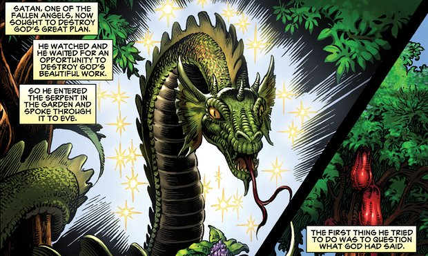
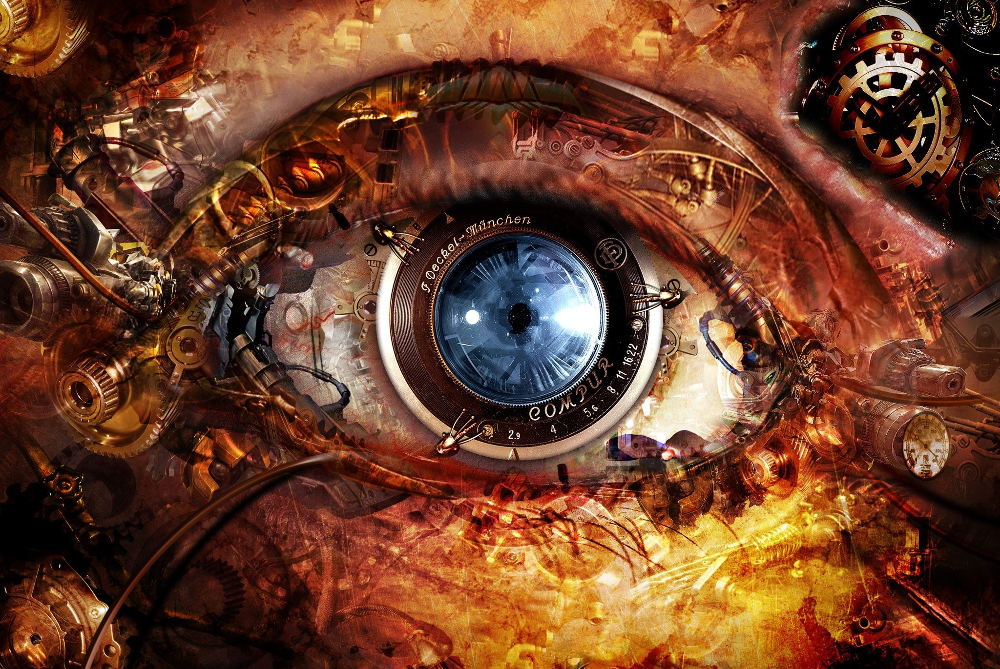

|
There may be demons, plagues and the all horrors of the apocalypse, but there’s no room for any spandex superheroes in a graphic novel that its publishers are claiming is the longest ever produced. The only superpowers that feature in the 10,000 panels of the Kingstone Bible are wielded in the good fight, as the greatest story ever told gets a 12-volume comic-book adaptation. Christian publisher Kingstone has been working on the project for seven years, using more than 45 illustrators to pull together what it is calling “the most complete graphic-novel adaptation of the Bible ever published”, at over 2,000 pages, in either 12 paperback volumes or three larger hardcover volumes. Art Ayris, the founder of Kingstone, says the publisher plumped for the comics format because “the interplay of text and images allows one to convey a large amount of content in an abbreviated form”. “A novice to religion who had never read the Bible before would be able to read through this graphic novel trilogy and have an understanding of some of the key narratives as well as key doctrines in the different books,” he says, “especially the Epistles. We have never seen this as a substitute for Bible reading but as a complement to help people ‘see’ the scriptures in a new light.” |
A US publisher claims to have produced the world’s
longest graphic novel – a 2,000-page adaptation
of the Old and New Testaments

|
Some of the books of the Bible were more difficult to adapt than others, Ayris admits, but artists were selected to fit the text. “For the book of Revelation we used a top horror artist who had been with Marvel, and it was a great fit for the powerful imagery in that book. Where we dealt with Bible reporting on major slaughter, rapes, adultery etc, we tried to honestly communicate but not be over the top with the graphic portrayals.” Ayris says that Kingstone is aiming the Bible at preteen readers and young adults, but that the publisher’s largest social media demographic is males between the ages of 18 and 29. “To a lot of people, the Bible is a big daunting book full of hard to pronounce names and seemingly unrelated stories. However, we come at it from the understanding that it is document of divine revelation about the nature and character of God, his dealings with mankind, a chronicle of ancient history as well as a revelation of the future.” Even though the Bible is constructed from 66 books it is “one unified story”, Ayris continues, story the publisher has done its best to respect. “The Kingstone Bible may be a very unorthodox approach to scripture but we have tried to be very orthodox in theological constructs.” |
|
At least one type of social learning, or the ability to learn from observing others’ actions, is processed by individual neurons within a region of the human brain called the rostral anterior cingulate cortex (rACC), according to a study published today (September 6) in Nature Communications. The work is the first direct analysis in humans of the neuronal activity that encodes information about others’ behavior. “The idea [is] that there could be an area that’s specialized for processing things about other people,” says Matthew Apps, a neuroscientist at the University of Oxford who was not involved with the study. “How we think about other people might use distinct processes from how we might think about ourselves.” |
During the social learning experiments, the University of California, Los Angeles (UCLA) and CalTech–based research team recorded the activity of individual neurons in the brains of epilepsy patients. The patients were undergoing a weeks-long procedure at the Ronald Reagan UCLA Medical Center in which their brains were implanted with electrodes to locate the origin of their epileptic seizures. Access to this patient population was key to the study. “It’s a very rare dataset,” says Apps. “It really does add a lot to the story.” With data streaming out of the patients’ brains, the researchers taught the subjects to play a card game on a laptop. Each turn, the patients could select from one of two decks of face-down cards: the cards either gave $10 or $100 in virtual winnings, or subtracted $10 or $100. In one deck, 70 percent of the cards were winning cards, while in the other only 30 percent were. The goal was to rack up the most money. |

|
The subjects learned which deck was better through trial and error—in other words, self-experienced learning. However, they also had the opportunity each round to observe two other “players,” virtual avatars whose moves had been pre-recorded and later adjusted by the research team to ensure an appropriate level of experimental variance. These virtual players chose from the same decks as the subject, and so for every choice the subjects made, they also received two other data points from which to draw conclusions about the decks.Throughout the card game, as players made predictions about which deck was better and subsequently won or lost their virtual money, the researchers collected data on which neurons were firing and when. “The actual signal that we record is the action potential, which is arguably a ground truth in the brain—it’s really where biology becomes information,” says Michael Hill, a coauthor of the study now based at the Center for Neuroprosthetics at EPFL in Switzerland. |
The research aligns with previous neuron studies of observational learning in rodents and non-human primates, and with human fMRI studies, says Steve Chang, a neurobiologist at Yale University who was not involved in the project. “This kind of result gives us a good guideline to target similar regions in the animal brain . . . and see what these neurons do when we causally manipulate them,” he adds. “These results from different angles will eventually all converge to an interesting picture for social cognition.” For humans, the results also point to another potential avenue for research in the clinic. “For conditions such as psychopathy or individuals on the autism spectrum, this sort of hints at a new target,” says Apps. With a team of colleagues, Apps is currently investigating if the social difficulties faced by some individuals on the autism spectrum are due to an absence of activity in response to prediction errors in this brain region. |